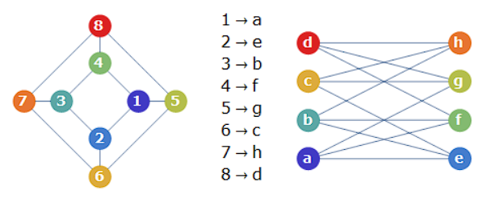

El concepto de isomorfismo implica una equivalencia estructural que permite considerar dos objetos o sistemas como "idénticos" en términos de su estructura, aunque puedan parecer diferentes en su forma o presentación.
A continuación encontrarás las definiciones de palabras y expresiones relacionadas con la asignatura de Pensamiento Sistemico
Isomorfismo
Sinergia
La sinergia es, en consecuencia, un fenómeno que surge de las interacciones entre las partes o componentes de un sistema.
Recursividad
Proceso que hace referencia a la introducción de los resultados de las operaciones de un sistema en él mismo.
Sistema
Un sistema es un conjunto de elementos interrelacionados que trabajan juntos para lograr un objetivo común o para funcionar como una unidad. Los elementos pueden ser físicos, conceptuales, o una combinación de ambos.
Sistema abierto
Que un sistema sea abierto significa que establece intercambios permanentes con su ambiente, intercambios que determinan su equilibrio, capacidad reproductiva o continuidad.
Sistema cerrado
En ocasiones el término sistema cerrado es también aplicado a sistemas que se comportan de una manera fija, rítmica o sin variaciones, como sería el caso de los circuitos cerrados.
Sistema natural
Se refiere a un conjunto de elementos y procesos que interactúan y se organizan de manera natural en el mundo físico y biológico.
Sistema artificial
es un conjunto de componentes diseñados y creados por los seres humanos para cumplir objetivos específicos o resolver problemas concretos.
Sistema deterministico
Es un tipo de sistema en el que el comportamiento futuro está completamente determinado por su estado actual y las reglas que lo rigen, sin ninguna influencia del azar o la aleatoriedad.
Sistema probabilistico
Es un tipo de sistema en el que el comportamiento futuro no está completamente determinado por su estado actual y las reglas que lo rigen. En lugar de tener un resultado predecible y fijo, el sistema tiene elementos de incertidumbre y aleatoriedad.
GESALT
es una teoría psicológica que se centra en cómo percibimos y organizamos las percepciones y experiencias en nuestra mente. Esta teoría sostiene que el todo es más que la suma de sus partes y que tendemos a organizar la información sensorial de manera que percibimos patrones y formas globales, en lugar de solo elementos individuales.
Equifinidad
Se refiere al hecho que un sistema vivo a partir de distintas condiciones iniciales y por distintos caminos llega a un mismo estado final.
Morfogenesis
Se trata de procesos que apuntan al desarrollo, crecimiento o cambio en la forma, estructura y estado del sistema.
Organicidad
su uso se asocia con la idea de que un sistema, diseño o entidad tiene una organización fluida, flexible y adaptativa, similar a la que se encuentra en los sistemas biológicos y naturales.
Homeomorfismo
un homeomorfismo es una transformación que mantiene la estructura topológica entre dos espacios. Es una herramienta crucial en topología para entender cómo los espacios pueden ser considerados equivalentes desde el punto de vista topológico, a pesar de sus diferencias visuales o geométricas.
Homeostasis
Los procesos homeostáticos operan ante variaciones de las condiciones del ambiente, corresponden a las compensaciones internas al sistema que sustituyen, bloquean o complementan estos cambios con el objeto de mantener invariante la estructura sistémica.